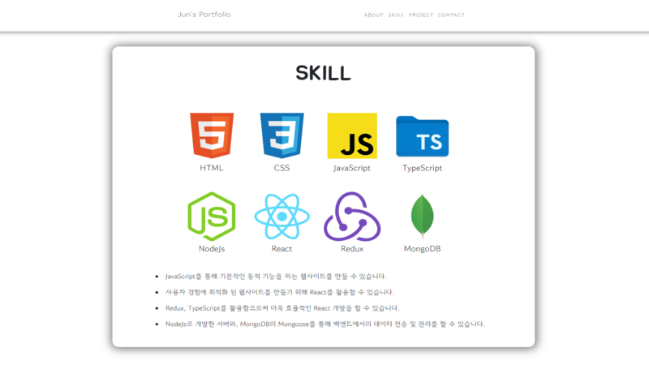

ABOUT
SKILL
PROJECT
CONTACT
ABOUT
도전과 성취를 향해 끊임없이 전진하는 개발자,
이정준입니다.
SKILL
 HTML
HTML
 CSS
CSS
 JavaScript
JavaScript
 TypeScript
TypeScript
 React
React
 Redux
Redux
 Angular
Angular
 NextJS
NextJS
 NodeJs
NodeJs
 Java
Java
 Spring
Spring
 MySQL
MySQL
Project
Blog
주요 기능
카테고리 및 폴더 생성, 글쓰기 및 댓글 달기, S3 이미지 업로드,
반응형 웹(모바일), 다크모드 등
기술 스택
React, Redux Saga, Express, MongoDB, AWS EC2 & S3
Blog는 저의 첫 CRUD 웹사이트 프로젝트입니다. 개발자라면 자신만의
기록 공간이 필수적으로 있어야 한다고 생각했기 때문에 첫 번째
프로젝트로 블로그를 만들어 보았습니다.
리액트로 SPA를 구성하였고 Redux Saga를 통해 서버와의 비동기 통신을 수행하였으며 글쓰기 기능을 위해 텍스트 에디터 중 하나인 CKEditor를 활용하였습니다. 프로필 이미지는 AWS의 S3에 업로드할 수 있게 개발하였고 AWS EC2로 실제 배포 단계까지 밟아보았습니다.
프론트엔드 개발자가 되는 것이 목표이지만, NodeJs라는 환경에서 백엔드 개발을 경험해볼 수 있었다는 점이 JavaScript의 매력을 새삼 느낄 수 있게 해주었습니다. 아직 미흡한 점이 많아, 코드 리팩토링 및 기능 추가를 통해 추후에는 실제 저의 블로그로 사용할 계획입니다.
리액트로 SPA를 구성하였고 Redux Saga를 통해 서버와의 비동기 통신을 수행하였으며 글쓰기 기능을 위해 텍스트 에디터 중 하나인 CKEditor를 활용하였습니다. 프로필 이미지는 AWS의 S3에 업로드할 수 있게 개발하였고 AWS EC2로 실제 배포 단계까지 밟아보았습니다.
프론트엔드 개발자가 되는 것이 목표이지만, NodeJs라는 환경에서 백엔드 개발을 경험해볼 수 있었다는 점이 JavaScript의 매력을 새삼 느낄 수 있게 해주었습니다. 아직 미흡한 점이 많아, 코드 리팩토링 및 기능 추가를 통해 추후에는 실제 저의 블로그로 사용할 계획입니다.
Movie Search


주요 기능
영화 검색, 최신 인기작 & 현재 상영작 & 개봉 예정작 조회, 특정
영화의 상세 정보 조회, 한 줄 리뷰 달기(+좋아요 기능), 개봉
예정작 알림 설정, 네이버 블로그 글 Fetch, 유튜브 영상 Fetch,
이메일 인증, 무한스크롤 등
기술 스택
React, Redux Toolkit, TypeScript(+ Next.Js), Express, MongoDB,
AWS S3
Blog 만든 경험을 바탕으로, 제가 좋아하는 영화에 대한 프로젝트를
만들어 보았습니다. 좋아하는 분야에 대한 프로젝트를 진행해서인지
Blog 프로젝트를 진행했을 때보다 훨씬 더 흥미롭게
진행했습니다.
리액트를 바탕으로 개발하였으며, JavaScript의 단점을 보완해줄 TypeScript를 활용하였습니다. Redux Toolkit을 통해 서버와의 비동기 통신을 수행하였고 프로필 이미지는 AWS의 S3에 업로드할 수 있게 개발하였습니다. 또한 Next.js의 Pages 폴더를 통해 편리한 라우팅 기능을 경험할 수 있었습니다.
Blog 프로젝트에서 Redux Saga의 난잡함을 느끼고 난 후에 Redux Toolkit의 존재를 알게되었는데, Redux Saga의 코드 양과 복잡성이 Redux Toolkit에서 두배는 더 줄었다고 체감할 수 있었습니다.
리액트를 바탕으로 개발하였으며, JavaScript의 단점을 보완해줄 TypeScript를 활용하였습니다. Redux Toolkit을 통해 서버와의 비동기 통신을 수행하였고 프로필 이미지는 AWS의 S3에 업로드할 수 있게 개발하였습니다. 또한 Next.js의 Pages 폴더를 통해 편리한 라우팅 기능을 경험할 수 있었습니다.
Blog 프로젝트에서 Redux Saga의 난잡함을 느끼고 난 후에 Redux Toolkit의 존재를 알게되었는데, Redux Saga의 코드 양과 복잡성이 Redux Toolkit에서 두배는 더 줄었다고 체감할 수 있었습니다.
RC Car
주요 기능
App을 통한 RC 카 조종, 자율 주행 등
기술 스택
시스템 프로그래밍, Arduino 회로 조립, Android Studio App 개발
본격적으로 웹 개발자가 되기로 마음 먹기 전에 진행한
프로젝트입니다. 웹 개발과는 무관하지만 복잡했던 회로 조립,
학교에서 배우지 않았던 아두이노 시스템 프로그래밍은 개인적으로
값진 경험이었습니다.
Android Studio를 통해 RC카와 블루투스 통신이 가능한 심플한 App을 개발하였습니다. App을 통해 RC카를 직접 수동 조종할 수도 있고, RC카의 앞 부분에 달린 초음파 센서를 통해 RC카 스스로 운전해 나가는 자율 주행 기능도 추가하였습니다.
Android Studio를 통해 RC카와 블루투스 통신이 가능한 심플한 App을 개발하였습니다. App을 통해 RC카를 직접 수동 조종할 수도 있고, RC카의 앞 부분에 달린 초음파 센서를 통해 RC카 스스로 운전해 나가는 자율 주행 기능도 추가하였습니다.
살롱 | SSALON
주요 기능
3D 인터랙티브 증표, 모임/카테고리 추천 시스템, 모임 참가자 간 채팅, 모임 참가자 인증 등
기술 스택
Angular, ThreeJS, Spring, MySQL, Redis, OpenAI, OAuth 2.0
아주대학교 소프트웨어학과 졸업 작품입니다.
저는 프론트엔드 개발자를 목표로 삼고 있었지만, 웹 개발자로서의 시야를 넓히기 위해 이 프로젝트에서는 백엔드 개발을 맡았습니다. Spring에 익숙하지 않은 상태에서 대규모 프로젝트를 진행하는 것은 도전적인 경험이었지만, 이를 통해 CI/CD의 구축과 AWS EC2 인스턴스의 운영에 대해 깊이 있게 학습할 수 있었습니다. 이 프로젝트는 기획부터 개발 완료까지 전 과정을 처음 만난 팀원들과 함께 협력하며 진행했으며, 다양한 문제를 해결해 나가는 과정에서 큰 성장을 이루었습니다.
JWT와 OAuth 2.0을 활용한 (카카오, 구글, 네이버) 소셜 로그인 기능 구현을 통해 보안과 인증 처리에 대한 경험을 쌓았으며, WebSocket을 이용한 실시간 채팅 기능 개발을 통해 웹 애플리케이션의 실시간 처리 능력을 향상시켰습니다. 또한, OpenAI의 이미지 생성 API를 활용하여 사용자에게 인터랙티브한 경험을 제공하는 기능을 구현하면서 최신 AI 기술을 실무에 적용하는 능력을 기를 수 있었습니다. 이 과정에서 GitHub Actions을 통한 CI/CD 파이프라인을 구축해 자동화된 배포 프로세스를 경험했고, 이를 통해 배포 속도와 코드 품질을 크게 향상시킬 수 있었습니다.
저는 프론트엔드 개발자를 목표로 삼고 있었지만, 웹 개발자로서의 시야를 넓히기 위해 이 프로젝트에서는 백엔드 개발을 맡았습니다. Spring에 익숙하지 않은 상태에서 대규모 프로젝트를 진행하는 것은 도전적인 경험이었지만, 이를 통해 CI/CD의 구축과 AWS EC2 인스턴스의 운영에 대해 깊이 있게 학습할 수 있었습니다. 이 프로젝트는 기획부터 개발 완료까지 전 과정을 처음 만난 팀원들과 함께 협력하며 진행했으며, 다양한 문제를 해결해 나가는 과정에서 큰 성장을 이루었습니다.
JWT와 OAuth 2.0을 활용한 (카카오, 구글, 네이버) 소셜 로그인 기능 구현을 통해 보안과 인증 처리에 대한 경험을 쌓았으며, WebSocket을 이용한 실시간 채팅 기능 개발을 통해 웹 애플리케이션의 실시간 처리 능력을 향상시켰습니다. 또한, OpenAI의 이미지 생성 API를 활용하여 사용자에게 인터랙티브한 경험을 제공하는 기능을 구현하면서 최신 AI 기술을 실무에 적용하는 능력을 기를 수 있었습니다. 이 과정에서 GitHub Actions을 통한 CI/CD 파이프라인을 구축해 자동화된 배포 프로세스를 경험했고, 이를 통해 배포 속도와 코드 품질을 크게 향상시킬 수 있었습니다.
Figma to Map Plugin
주요 기능
지도상에 Figma 컴포넌트 표시, 컴포넌트 드래그/리사이즈/회전, Figma <-> plugin 사이의 Import/Export, 지도 검색 기능 등
기술 스택
Figma Plugin API, TypeScript, React, Webpack, MUI, OpenLayers
인턴으로서 참여한 첫 프로젝트입니다.
프로젝트의 목표는 디자이너와 개발자 간의 협업을 지원하는 Figma에서 특정 컴포넌트를 지도상의 특정 위치에 배치하고, 해당 좌표를 기억할 수 있는 프로그램을 개발하는 것이었습니다. 이 요구사항을 충족하기 위해서는 Figma 내에서 작업을 확장하거나 자동화하는 기능을 제공하는 Figma 플러그인을 개발하는 것이 최적의 선택이었습니다. Figma는 프론트엔드 작업 중 가끔 사용한 경험이 있었지만, 플러그인을 직접 개발한 것은 처음이었기에 이번 인턴십이 매우 뜻깊은 경험이 되었다고 생각합니다. 이 프로젝트를 통해 Figma의 사용법에 익숙해졌고, 앞으로 디자이너와의 협업이 더 원활할 것이라는 자신감도 얻게 되었습니다.
Figma Plugin API를 사용하여 플러그인의 기본 기능들을 구성하였으며, Figma와 (Webpack + TypeScript + React) 간의 원활한 조화를 위해 이미 번들링 설정이 되어 있는 보일러플레이트(출처)를 사용하였습니다. 또한, 지도를 표시하기 위해 OpenLayers 라이브러리를 사용하였고, Nominatim 라이브러리를 통해 지도 검색 기능을 구현하였으며, MUI 라이브러리를 활용해 UI를 개선했습니다.
프로젝트의 목표는 디자이너와 개발자 간의 협업을 지원하는 Figma에서 특정 컴포넌트를 지도상의 특정 위치에 배치하고, 해당 좌표를 기억할 수 있는 프로그램을 개발하는 것이었습니다. 이 요구사항을 충족하기 위해서는 Figma 내에서 작업을 확장하거나 자동화하는 기능을 제공하는 Figma 플러그인을 개발하는 것이 최적의 선택이었습니다. Figma는 프론트엔드 작업 중 가끔 사용한 경험이 있었지만, 플러그인을 직접 개발한 것은 처음이었기에 이번 인턴십이 매우 뜻깊은 경험이 되었다고 생각합니다. 이 프로젝트를 통해 Figma의 사용법에 익숙해졌고, 앞으로 디자이너와의 협업이 더 원활할 것이라는 자신감도 얻게 되었습니다.
Figma Plugin API를 사용하여 플러그인의 기본 기능들을 구성하였으며, Figma와 (Webpack + TypeScript + React) 간의 원활한 조화를 위해 이미 번들링 설정이 되어 있는 보일러플레이트(출처)를 사용하였습니다. 또한, 지도를 표시하기 위해 OpenLayers 라이브러리를 사용하였고, Nominatim 라이브러리를 통해 지도 검색 기능을 구현하였으며, MUI 라이브러리를 활용해 UI를 개선했습니다.
Jun's Portfolio

주요 기능
포트폴리오 사이트
기술 스택
HTML, CSS, JavaScript
심플하게 저만의 포트폴리오 사이트를 만들어 봤습니다. 개인
블로그와 마찬가지로, 개발자라면 개인 포트폴리오 사이트를
필수적으로 가지고 있어야 한다고 생각했습니다.
포트폴리오 사이트는 굳이 프레임워크를 사용하지 않고 개발할 수 있다고 생각해서 HTML, CSS, JavaScript 만으로 개발하였는데, 이미 리액트에 익숙해져서 인지 오히려 더 개발하기 껄끄럽다고 느껴졌습니다. 이번 프로젝트를 계기로 프레임워크의 강력함, 특히 리액트의 컴포넌트의 힘을 느낄 수 있었습니다.
아직은 많이 비어 있는 상태이지만 5년, 10년 뒤에는 지금과는 다른 사이트가 되어 있을 거라고 확신합니다. 꽉찬 포트폴리오를 만드는 날까지 성실함을 잃지 않도록 노력하겠습니다.
포트폴리오 사이트는 굳이 프레임워크를 사용하지 않고 개발할 수 있다고 생각해서 HTML, CSS, JavaScript 만으로 개발하였는데, 이미 리액트에 익숙해져서 인지 오히려 더 개발하기 껄끄럽다고 느껴졌습니다. 이번 프로젝트를 계기로 프레임워크의 강력함, 특히 리액트의 컴포넌트의 힘을 느낄 수 있었습니다.
아직은 많이 비어 있는 상태이지만 5년, 10년 뒤에는 지금과는 다른 사이트가 되어 있을 거라고 확신합니다. 꽉찬 포트폴리오를 만드는 날까지 성실함을 잃지 않도록 노력하겠습니다.